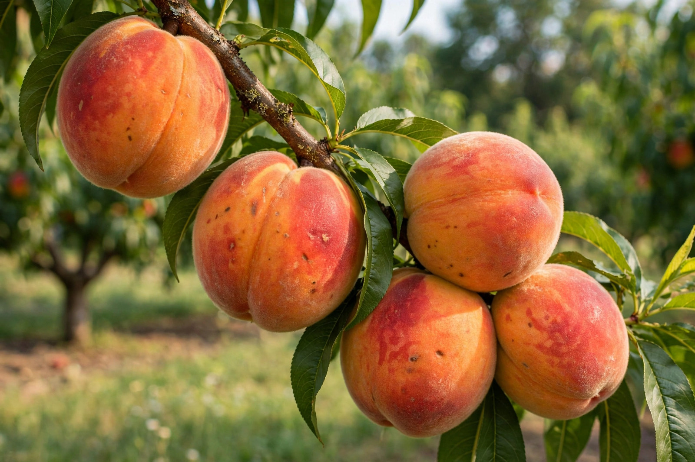

Peach
From Wikipedia, the free encyclopedia

The peach (Prunus persica) is a stone fruit of the rose family — a soft, fuzzy-skinned drupe with sweet, aromatic, yellow or white flesh around a deeply pitted stone. Despite its Latin name, which reflects its arrival in Europe from Persia, the peach is Chinese: it was domesticated in the Yangtze region thousands of years ago and remains a symbol of longevity in Chinese culture, where the Queen Mother of the West feasts on peaches of immortality. The nectarine is simply a smooth-skinned sport of the same species. Peaches divide into melting-flesh freestones (the stone falls away) and firm clingstones, most of which go to canning.
History and spread
Peach stones from archaeological sites in Zhejiang date the fruit's use back some 7,000–8,000 years. Peaches travelled the Silk Road to Persia, were admired in Rome, and crossed the Atlantic with Spanish explorers in the 1500s; Native American farmers adopted them so quickly that later botanists mistook them for natives. Georgia styles itself the Peach State — its 19th-century Elberta variety built the state's name, though California and South Carolina now out-produce it. In the 20th century, breeding extended peaches into flat "doughnut" forms and low-acid white varieties popular in East Asia.
Cultivation and use
Peach trees are short-lived and need winter chill to set fruit, which suits them to temperate zones with cold winters and hot summers. The fruit bruises if you look at it, so local and canned markets dominate: the peach season is famously brief and worth waiting for. Peaches are eaten fresh, grilled, baked into cobblers and pies (Georgia's signature), canned in syrup, dried, and churned into ice cream; in the American South, peach picking is a summer ritual. The kernels inside the stones, like those of other stone fruit, contain amygdalin and are not eaten.